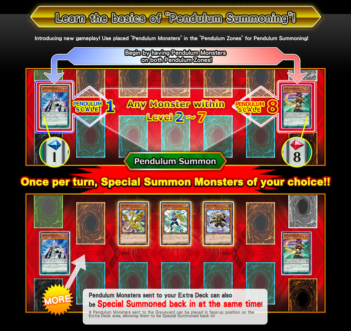

| description | Fusion Summon | Synchro Summon | Xyz Summon | Pendulum Summon | Link Summon |
|---|
Pendulum
Summon

A Pendulum Summon (Japanese ペンデュラム召しょう喚かん Pendyuramu Shōkan; usually abbreviated Ｐペンデュラム召しょう喚かん) is a form of Special Summon introduced in Yu-Gi-Oh! ARC-V.Pendulum Summoning allows the player to Summon multiple monsters simultaneously
Mechanics
Once per turn, during the Main Phase, if the turn player has a card with a Pendulum Scale in each of their two Pendulum Zones (for a total of 2 cards), that player can Pendulum Summon any number of monsters from their hand, and/or any number of face-up Pendulum Monsters in their Extra Deck, whose individual Levels or Ranks[4] are exclusively between the Pendulum Scales of the cards in their Pendulum Zones (i.e. monsters whose individual Levels/Ranks are between the Pendulum Scales and not the same as the Pendulum Scales' values).
\As per New Master Rule, monsters Special Summoned from the Extra Deck (including Pendulum Monster(s) that are face-up in the Extra Deck) must be Summoned to an unoccupied Main Monster Zone that a Link Monster points to or an Extra Monster Zone. Monsters that are Pendulum Summoned from the hand are Summoned to Main Monster Zones
Advanced Rulings
Because of the restriction on Levels and Ranks, no monsters can be Pendulum Summoned if the cards in the Pendulum Zones have Pendulum Scales that are differ by one or less (i.e. 4 and 4, 3 and 4, or 4 and 3). However, this has no impact on the usage of Pendulum Effects.
A Pendulum Summon is a type of built-in Special Summon, so it can be negated by cards like "Solemn Warning" and "Thunder King Rai-Oh"; however, if more than 1 monster would be Pendulum Summoned at the same time, cards like "Black Horn of Heaven" (which specify they can only be activated when exactly 1 monster would be Summoned) cannot be activated.
in: Types of Summon Pendulum Summon EDIT SHARE Pendulum Summon PendulumSummon A Pendulum Summon in the anime Japanese Ｐペンデュラム召しょう喚かん[Notes 1] Japanese (ruby) ペンデュラムしょうかん Japanese (base text) Ｐ召喚 Japanese (romanized) Pendyuramu Shōkan English Pendulum Summon [show]Other names A Pendulum Summon (Japanese ペンデュラム召しょう喚かん Pendyuramu Shōkan; usually abbreviated Ｐペンデュラム召しょう喚かん) is a form of Special Summon introduced in Yu-Gi-Oh! ARC-V.[1] Pendulum Summoning allows the player to Summon multiple monsters simultaneously.[2][3] Contents[show] Mechanics Once per turn, during the Main Phase, if the turn player has a card with a Pendulum Scale in each of their two Pendulum Zones (for a total of 2 cards), that player can Pendulum Summon any number of monsters from their hand, and/or any number of face-up Pendulum Monsters in their Extra Deck, whose individual Levels or Ranks[4] are exclusively between the Pendulum Scales of the cards in their Pendulum Zones (i.e. monsters whose individual Levels/Ranks are between the Pendulum Scales and not the same as the Pendulum Scales' values). Moana, a heroine kids and adults alike will admire and cheer for WATCH NOW ON DISNEY+ As per New Master Rule, monsters Special Summoned from the Extra Deck (including Pendulum Monster(s) that are face-up in the Extra Deck) must be Summoned to an unoccupied Main Monster Zone that a Link Monster points to or an Extra Monster Zone. Monsters that are Pendulum Summoned from the hand are Summoned to Main Monster Zones Advanced Rulings Because of the restriction on Levels and Ranks, no monsters can be Pendulum Summoned if the cards in the Pendulum Zones have Pendulum Scales that are differ by one or less (i.e. 4 and 4, 3 and 4, or 4 and 3). However, this has no impact on the usage of Pendulum Effects. A Pendulum Summon is a type of built-in Special Summon, so it can be negated by cards like "Solemn Warning" and "Thunder King Rai-Oh"; however, if more than 1 monster would be Pendulum Summoned at the same time, cards like "Black Horn of Heaven" (which specify they can only be activated when exactly 1 monster would be Summoned) cannot be activated. Pendulum Summoning is unrelated to the effects of the Pendulum Monsters in the Pendulum Zones, so can be performed even if their effects are negated (such as due to the effect of "Vector Pendulum, the Dracoverlord").